Creating a graph of Parameter lists
In this section we describe step-by-step how to import an existing model of cell cycle and how to link few mutant configurations of parameters and simulations to the model.
Different parametrization of an existing model (often referred as mutant in this document) account for variations of the parameters values that may model, for example, a genetically modified organism. Knock-out or over-expressions of specific genes and change in the growth media are just few of the modifications that are carried out by modelers just changing few numerical parameters in the model (e.g., setting them to zero or increase them by a factor).
As a running example, we use a model of budding yeast cell cycle that has been published few years ago \cite{chen2004}.
This model is available in SBML format in the Biomodel database (model 56 \cite{biomodels}). The SBML model is parametrized with respect to the wild-type behavior of the budding yeast cell cycle. However the published model has been developed to account for more than 100 different genetic strains of budding yeast and the collection of the parameter variation needed to model these different strains is listed at \buddingYeastWebsite.
To couple the initial SBML model with the different mutant parameter configurations, MSMB-RM can be used as follows:
- load the SBML file in MSMB: tables are filled with the Reactions, Species, etc. that compose the original model
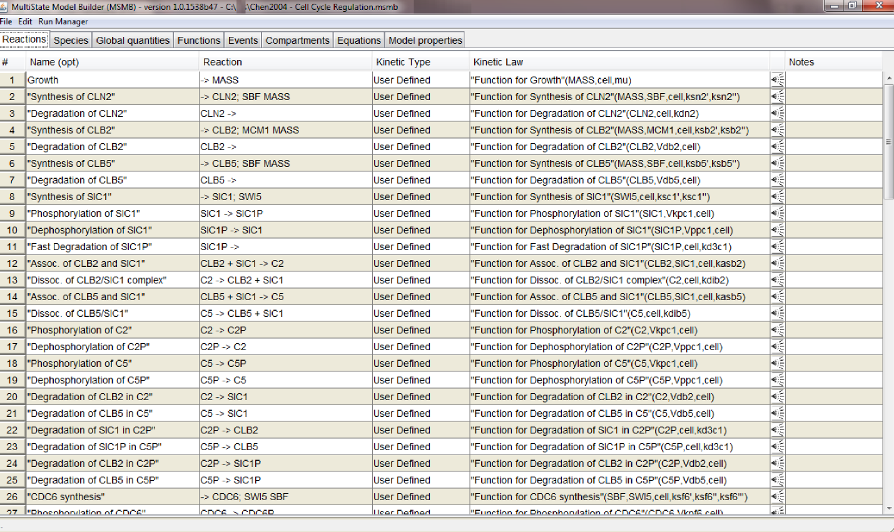
- select the "Open Run Manager" option in the "Run Manager" menu: a window with different tabs opens. This is RM's main window. It contains independent but connected graphs, each representing a different aspect of the model parametrization (Model values, Time course, Plotting, ...). The first time the window is opened each tab will be empty. Once graphs have been added to the model, the user can save the entire model (together with the parametrization in the Run Manager) through the "Save to .msmb" option. The next time the user can open the saved .msmb and continue working on either the model or its parametrization
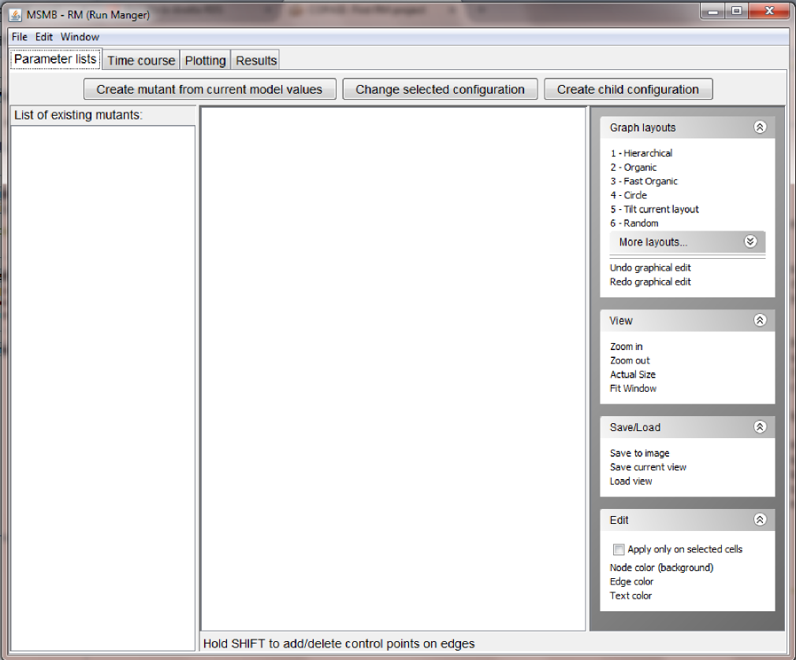
- add the first Parameter lists mutant: in the "Parameter lists" tab, click the "Create mutant from current model values" button. The user will be asked to give this configuration a name. Since the current model holds the parameters for the wild type in glucose, we will call the node
WT_glucose.
Warning!! We highly encourage users to use names that contain only letters, numbers and _. The tool can also handle names with spaces and other symbols. However these names need to be quoted and they need to appear quoted every time they are used in expressions (see later for examples of expressions). Since quoting the names may make the name less readable and hard to maintain, we encourage the user to avoid spaces and other special symbols.}
The newly created node will appear both in the graphical view of the graph, as well as in the list of all the defined lists.
Since the current model imported from Biomodels already contains the right numerical values for modeling the wild type in glucose, we don't need to customize the content of this node, so we can go on and define new nodes in the Parameter list graph.
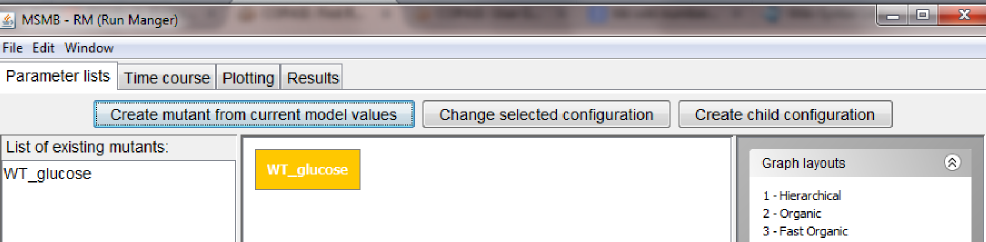
Note: the look of the graph/nodes can be customized using the options listed on the right.
- add the first dependent mutant: since in RM mutants can be defined in a convenient hierarchy, we can define a new parameter list node as a child of the one defined in the previous step. This allows the child configuration to inherit all the values of the parent (or parents) possibly redefining some specific values in the local configuration. More complete examples where multiple parents are used for the mutant definition and conflict are detected are presented in the User Guide section.
In this first example, to create a child configuration, the user can select the parent node in the graph (WT_glucose) and then click the "Create child configuration" button. The user will be asked to give this new configuration a name (note: the name has to be unique in the graph. If a duplicate name is provided, the tool will ask the user for a new fresh name). We will call the new node WT_galactose.
The newly created node will appear both in the graphical view of the graph (as a node connected to its parent), as well as in the list of all the defined lists.
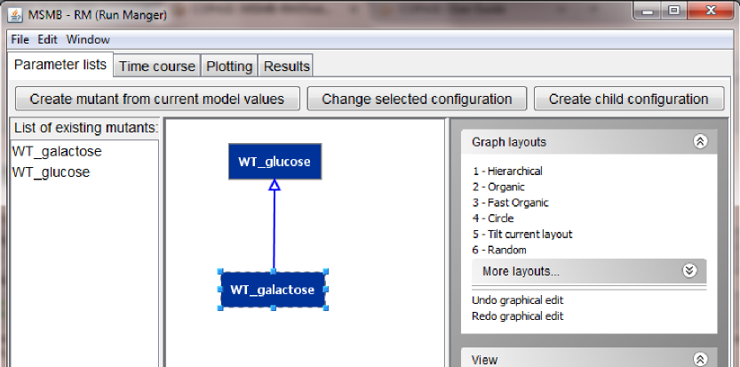
Note: the newly created node will be located in the top-left corner of the screen. The user can reposition the node manually or use one of the many layout options on the right
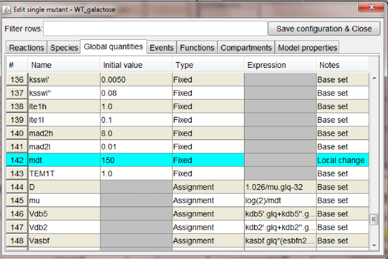
- adding new configurations: following the instructions listed in the previous steps we added one mutant configuration connected to
WT_glucose, Cdh1 (where we set to zero the global quantity kscdh and the initial quantities of the species CDH1 and CDH1i), and one mutant configuration connected to WT_galactose, GAL_CLB2 (where we changed the value of ksb2' to 0.12).
At this point the graph should look as in the figure below.
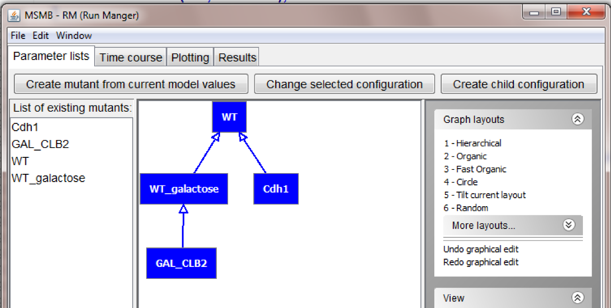
Creating a graph of Simulation settings
The idea of defining changes in parameter values in a hierarchical way can be applied not just to model parameters but also to simulation settings and other similar analysis.
Some of the changes in the model parameters may need to be treated differently for what concern simulation runs. For example, in the budding yeast cell cycle model used in the section before, some mutants represent the organism growing in different media: this cause the entire cell cycle machinery to slow down, hence in a fixed time frame less complete cycles can be observed. It may be interesting for the modeler to set different simulation settings for these slow mutants so that the overall number of cell is comparable to the fast mutants. This scenario is very similar to the one encountered when describing changes in model parameter because again only one element in the simulation settings (the end time in this case) need to change, while all others would remain the same.
MSMB-RM allows the user to define a graph for simulation settings in the "Time course" tab.
The layout of the tab is very similar to the layout of the "Parameter lists" tab, as it has a list of nodes on the right, the graph in the center and a list of graphical actions for the graph on the right. Also the three buttons at the top have similar functions as in the previously described section and they allow the user to create new nodes in the "Time course" graph, change the internal values of a node and connect them in a parent/child relationship.
Below a figure showing a graph with two node, holding simulation settings for a "short" simulation run and a "long" one.
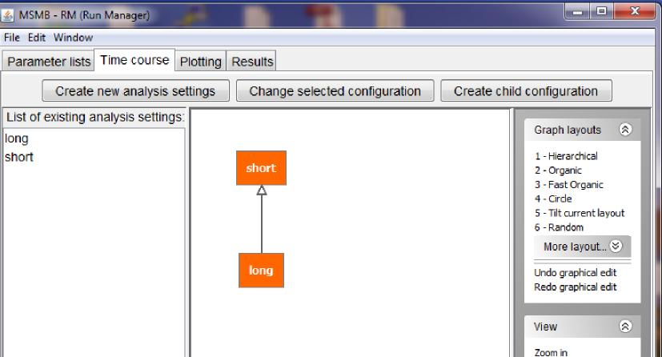
Double click on a node, opens a pop-up window where the user can select specific settings for the current simulation run (figure below).
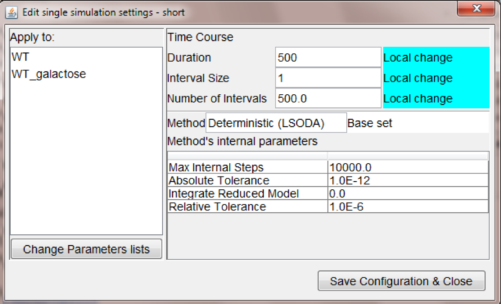
The settings displayed above shows that is possible to:
- apply the settings only to specific mutant parameters (WT and WT_galactose)
- customize the duration/interval size of the simulation run
- leave other parameter values unchanged (i.e., as defined in the base set)
The settings for the "long" time course node are displayed below and they show another interesting feature of expressions in (any) field of MSMB-RM: the user is allowed to express a quantity with a mathematical expression involving quantities of ancestors nodes.
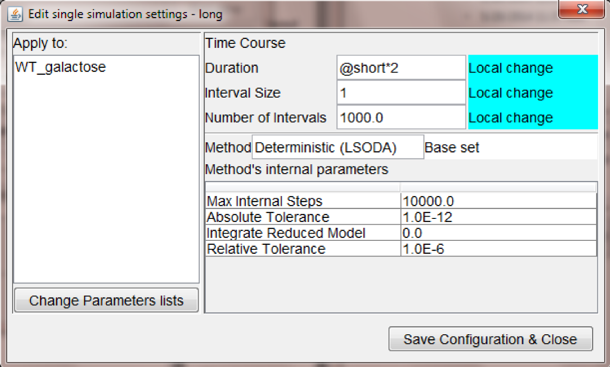
In particular, the duration of the simulation is expressed as "@short*2" which is statically computed by the tool to be the value of the duration in the node called "short" times two. In this way it is easy to propagate a single change in one of the ancestors to the appropriate descendant.
Creating a graph of Plotting settings
The idea of defining changes in parameter values in a hierarchical way can be also applied to plotting settings, following exactly the same rules as for model parameters and time courses.
Specific mutant may require to be presented in plots with different criteria: for example in a mutant where the gene for the Cdh1 protein has been knocked out, the time course of the protein Cdh1 could be omitted (since it should be constantly 0).
MSMB-RM allows the user to define a graph for plotting settings in the "Plotting" tab.
The layout of the "Plotting" tab is very similar to the layout of the "Parameter lists" and "Time course" tabs, as it has a list of nodes on the right, the graph in the center and a list of graphical actions for the graph on the right. Also the three buttons at the top have similar functions as in the previously described sections and they allow the user to create new nodes in the "Plotting" graph, change the internal values of a node and connect them in a parent/child relationship.
An important fact to notice is that even if the RM offers the capability of defining a hierarchical graph with multiple nodes, it is not mandatory to have multiple nodes in the "Plotting" tab. One single group of settings for all "Time series" nodes may suffice for some modelers and that's the option that we are going to show in this first short tutorial. Inheritance rules for plotted variables, colors, line styles, etc. applies for more complex graph (not shown in this tutorial).
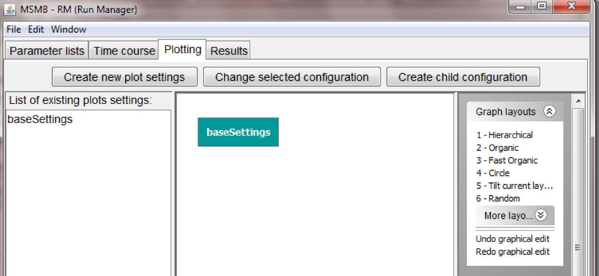
Double click on a node, opens a pop-up window where the user can select specific settings for the current plotting settings (figure below).
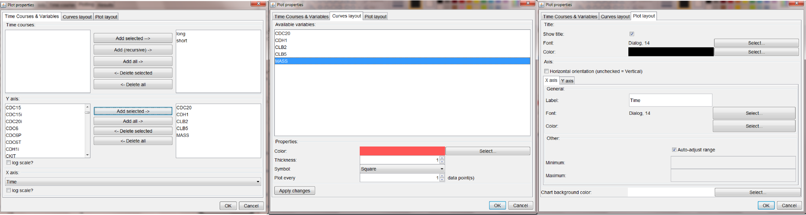
The settings displayed above shows that is possible to:
- apply the settings to all the time courses that will be run (long and short have both been added to the current plot properties)
- choose any of the model variables (or time) as the X axis, and any of the other variable for the Y axis (possibly more than one)
- customize the appearance of each line in the plot (i.e., color, thickness, symbol and plotting interval)
- customize other general layout options for the XY plot (e.g., font and color of the title, x/y labels, plot background color, etc.)
Once all the changes has been done, clicking the "OK" button in the lower right corner will save the configuration and the entire group of parameters lists, simulation and plot settings is ready to be used for simulations inside MSMB-RM (next section).
Running the simulations within MSMB-RM
If the user decides to use MSMB-RM to run and visualize the simulation runs, the plot results will be shown in the "Results" tab.
To run the simulation the user can select the "Run simulations" option in the "Edit" menu.
This will open a pop-up windows in which the user can choose which time course/mutant to run. This allows the user to define a big set of mutants/simulation settings with the goal of storing it for future use, but only simulate and visualize the ones that the modeler is interested to see.
The pop-up window for the example built in this chapter looks as follows:
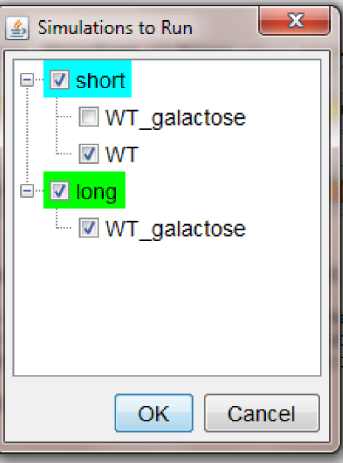
Note: the tree shows all the available Time course nodes as roots, and a list of all the Parameter lists associated to each Time course node as their children. Checkboxes allow the user to select only the nodes that need to be run. The color of the root node indicates if all (green) or just few (cyan) of the children has been selected
Once the selection is done, clicking OK will initiate the execution of all the simulation runs. The progress is presented to the user through a progress bar.
Once the simulation task ends the plots are visualized in the "Results" tab as follows:
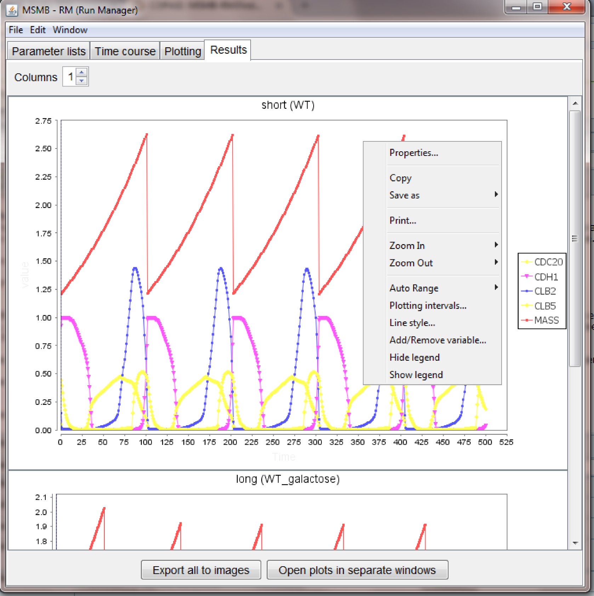
The figure above shows several capabilities of the tool, in particular:
- it may happen that the color/style chosen in the "Plotting settings" node are not very pleasant in the final plot: the look of each separate plot can be customized without re-running the simulations, using the right-click menu available for each plot.
- the right-click menu can be used to zoom in/out, print a single plot, copy it to the clipboard, save it as image
- the right-click menu contains options to add/remove variables, change the plotting interval, show/hide legend
- all the plots are embedded in the main window, but for easy comparison of different plots, the "Open plots to separate windows" is available: this cause each plot to have an independent window that can be repositioned/maximized on the user screen. Closing each window will cause the plot to go back to its embedded state. The "Window" menu helps the user to bring to front a selected plot
- each plot can be saved in a separate image using the option in the right-click menu, however a single "Export all to images" button is available for the modeler that wants to save all the plots in a local directory
Exporting to COPASI
An "Export to .cps" option is available in the "File" menu of the Run Manager.
As today, multiple parameter sets can be exported and stored in a single COPASI file, but neither multiple Time courses nor multiple Plotting settings can be stored. Because of that, all the nodes in the "Parameter lists" graph will be exported to different "Parameter Sets" in the COPASI file, but only one Time course node and one plotting settings node will be stored. MSMB-RM will ask the user which nodes to save.
Warning on using the Hierarchical layout
The library used to display the graphs and to run the different automatic layout has some issues when graphs created running Java 6 are displayed on a machine running Java 7 (and viceversa). If compatibility issues are found, an error message is shown and the layout is not performed.
The model, the parameters, and the content of the graph is not affected by this error and all other automatic layouts works fine. We are working to find a solution for this issue.
In the meantime an easy workaround is to run JCMSMB with the same version of the JRE used to create the initial graph (i.e., Java 6 for the examples provided within the installer).